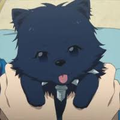
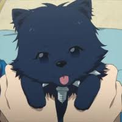

Dramatical Murder, estilizado como DRAMAtical Murder, es una novela visual japonesa de género yaoi y ciencia ficción desarrollada por Nitro+Chiral y escrita por Fuchii Kabura.
hola
 

Mi primer sitio web para el bootcamp de Tecnolochicas Pro